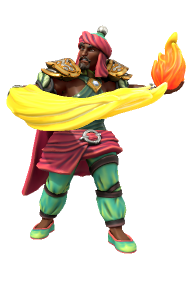

Baal Adhikari

Baal Adhikari was once captain of The Vengeance, then called The Sultan's Fist, until he was killed by Bertha Bloodletter, who took control of the ship and crew.!
🡐 Notable Bloodswords
Baal Adhikari was once captain of The Vengeance, then called The Sultan's Fist, until he was killed by Bertha Bloodletter, who took control of the ship and crew.!
🡐 Notable Bloodswords